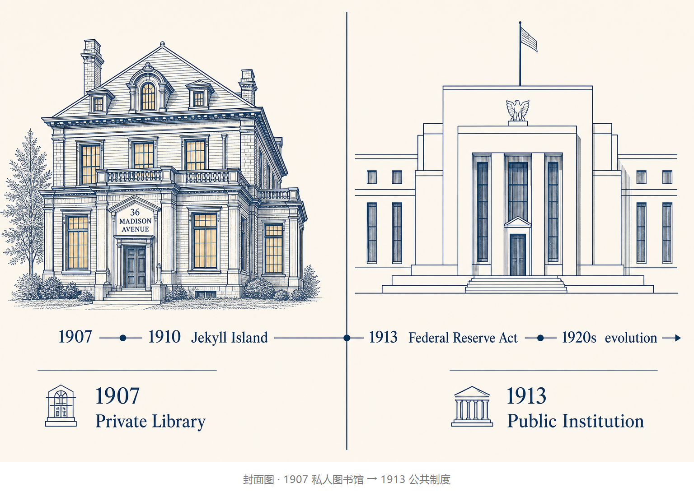
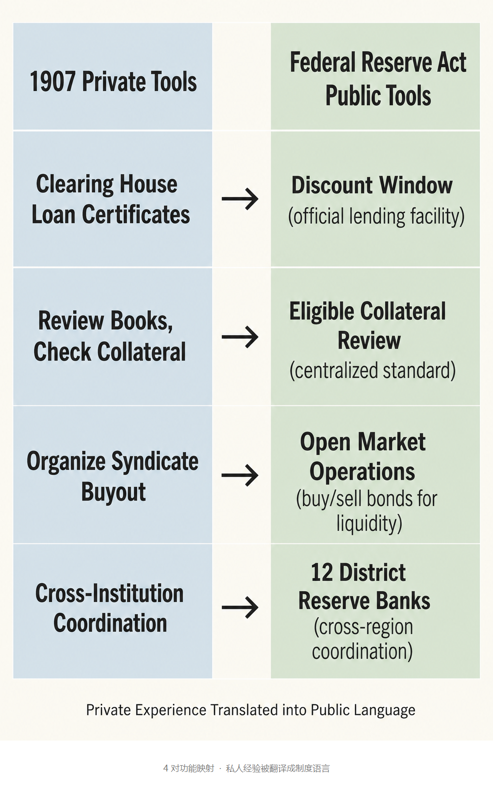
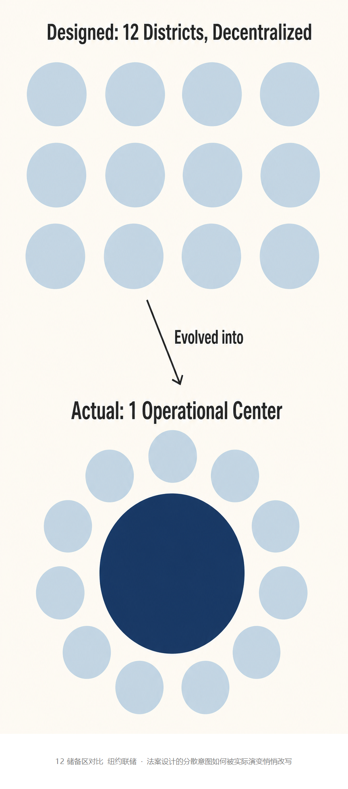

大多数人提起美联储，第一反应是：它是华盛顿那栋政府大楼里"管美元"的央行，是用来"管"华尔街的。
可这套直觉放回 1907 年的纽约会立刻失灵。
那一年美国没有央行。是摩根在自家图书馆里召集纽约主要银行家，拍板让哪家机构能借到钱、哪家要等一等。最后确实把恐慌压下。
把一个概念先锚下来：协调权。
看账本、查抵押、安排接盘、在多家银行之间协调资金——这套具体动作 1907 年在私人图书馆里能办成，1913 年之后被装进一栋公共建筑。
但桌子没有因此完全打开。
文章要回答的就是这件事：私人协调权如何被国家吸收并放大。

1907 年 10 月中下旬，纽约麦迪逊大道 36 号。
摩根图书馆是 1902 到 1906 年间由麦金姆设计建成的私人馆藏，橡木墙、高天花板。平日里这只是一处安静的私人收藏地。
那一年 10 月，纽约第三大信托公司尼克伯克信托因联合铜业公司的收购失败遭挤兑，恐慌从一家信托蔓延到多家机构，纽约的银行间隔夜拆借几乎冻结。
摩根在那段时间召集纽约主要银行总裁到这间图书馆里坐下来协调。他们做的事并不复杂：看账本，判断哪一家是暂时缺现金、哪一家是真的资不抵债；查抵押，看手头的票据和证券能不能撑住；商议接盘，让几家大银行联合出资垫付资金。
整个过程没有央行的支持，没有法律授权，是一套全靠个人判断和私人信誉的临时机制。
私人救市有效，危机暂时压下。但这只是临时机制——撑不起来。
私人协调能救一次火，但它有几个结构性短板。
第一，1907 年纽约清算所发行的贷款证只在成员银行之间流通，而尼克伯克信托不是清算所会员。作为信托公司它没有资格申请清算所贷款证。私人版的最后贷款人只能服务圈内人。
第二，摩根靠的是个人判断：看账本、查抵押，识别机构是"缺现金"还是"资不抵债"。这套识别能力在 1907 年由一位资深银行家承担，放到跨周期里就不可复制。一个人无法长期替代央行。
第三，私人协调没有法律基础。摩根能让银行家坐下来，是因为他的私人信誉和关系网。一旦恐慌的规模超过个人能力的天花板，这套机制就失效了。
1907 年的私人救市在它的范围内有效，但把时间拉长，它只是临时机制，不是制度安排。国会派出一个全国货币委员会来研究问题。这件事在制度史上被记住的，是 1910 年 11 月的杰基尔岛。

1907 恐慌之后，国会先在 1908 年通过奥尔德里奇—弗里兰法案，授权紧急货币发行，并成立国家货币委员会做研究。这个委员会是 1910 年 11 月佐治亚州杰基尔岛会议的官方平台。
1910 年 11 月，参议员奥尔德里奇与约 6 名华尔街代表在杰基尔岛秘密起草中央银行方案。这不是一间打猎俱乐部，也没有锁门扣人——这是一场把 1907 年用过的私人工具翻译成中央银行语言的会议。
翻译的具体内容是：1907 年私人银行家用的清算所贷款证，变成了后来联邦储备法里成员银行短期借款的官方窗口（贴现窗口）；摩根个人看账本、识别机构现金状况的判断，变成了央行标准化识别抵押品价值的合格抵押品审查。
下一组对应是接盘动作与跨区协调：私人银行家组织财团购入问题资产的接盘动作，变成了央行在公开市场上买卖债券以调节流动性的公开市场操作；私人银行家在不同机构之间协调资金的做法，变成了联邦储备体系下 12 个分散储备区之间的跨区协调。
奥尔德里奇计划 1912 年在国会未通过。后来这部计划的核心机制——贴现窗口、最后贷款人、储备集中——被保留，治理结构则被改写为政治任命委员会加分散的 12 家地区银行。这是一次"核心机制继承、治理结构改写"的再设计。
这段方案从杰基尔岛带回华盛顿之后，被怎么改写成公共制度？
1913 年 12 月 23 日，威尔逊总统签署《联邦储备法》。这部法案做了一个看上去有点"过度分散"的设计：把美国本土划分为 12 个储备区，每区设立一家联储银行，由甲、乙、丙三组董事治理——甲组代表会员银行，乙、丙组代表公众。
法案的设计意图是"不让任何单一城市独占央行"。
法案里的贴现窗口是这么工作的：成员银行可以用合格抵押品向所在储备区的联储银行借短期资金，应对存款人异常提现需求。这就是把"最后贷款人"从一个人的行为变成了公共制度的功能——以前由摩根个人决定能不能借、给谁借，现在由一个法定机构按规则处理。
19 世纪英国经济学家白芝浩（他主张恐慌时央行应自由放贷）在《伦巴第街》里提的那条原则，是这部法案的思想资源之一，但不是简单的线性照搬。
法案设计了 12 家分散的联储银行，但它刚被写进条款，最深的私人经验就被一个人接住了：1914 年本杰明·斯特朗出任纽约联储首任总裁。他早年在纽约银行家信托公司任职，1907 年风暴中作为戴维森（摩根合伙银行高级合伙人）的助手参与过私人救市协调。这种"职业关系"是他被推选到这个位置的关键背景：他懂华尔街的运作，也被威尔逊政府接受。纽约联储位于曼哈顿金融区，距离华尔街最近。斯特朗本人就是从华尔街走进公共制度的人，被国家制度赋予新角色。

法案设计了 12 家分散的联储银行，但实际运行中发生了一件法案设计者没完全预见的事。
具体地看，1923 年起纽约联储交易台开始承担日常公开市场操作。联邦公开市场委员会（即决议央行买卖债券的委员会）决议下的债券买卖，越来越多地由这一间交易台执行。联邦公开市场账户（即央行实际持有债券的账户）的操作中心也在纽约联储。这种集中不是某一天突然发生的，而是在 20 世纪 20 年代实际运行中慢慢形成的。
三层具体化：
法案设计的"分散意图"在 20 世纪 20 年代实际运行中被悄悄改写。法案文字上是 12 个平等的储备区，操作上是其中一家越来越承担操作中枢。这是设计意图和实际演变之间的具体张力。
建筑换了一栋，但桌子没有因此完全打开。
把这三件事放回一起看：法案刚把"分散"写进条款，最深的私人经验就被斯特朗接住；法案设计了 12 家联储银行，操作层面却是纽约联储交易台承担日常公开市场操作；法案字面上"不让任何单一城市独占央行"，实际运行中枢却在曼哈顿金融区。
当一个国家把某种关键的协调能力吸收进公共制度，它未必会把这种能力"中立化"。制度设计者、节点位置和工具箱，仍会决定它服务谁。